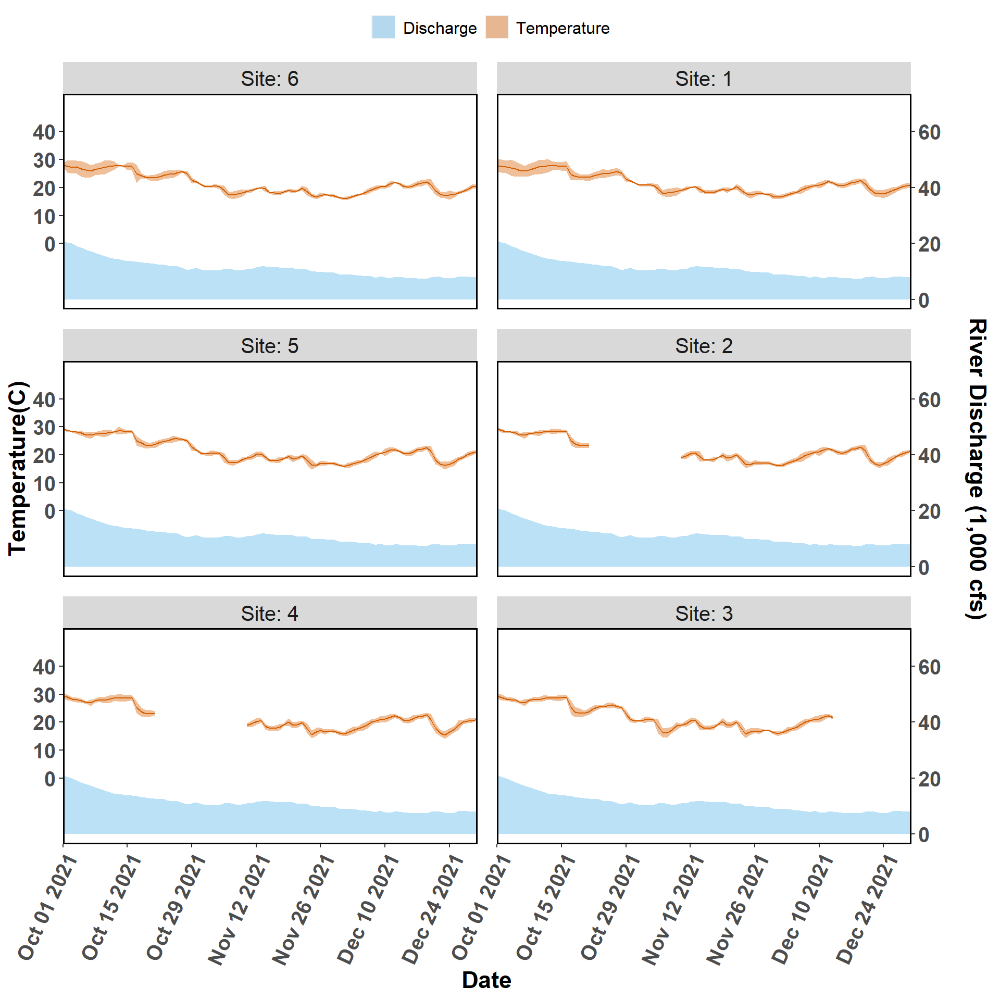
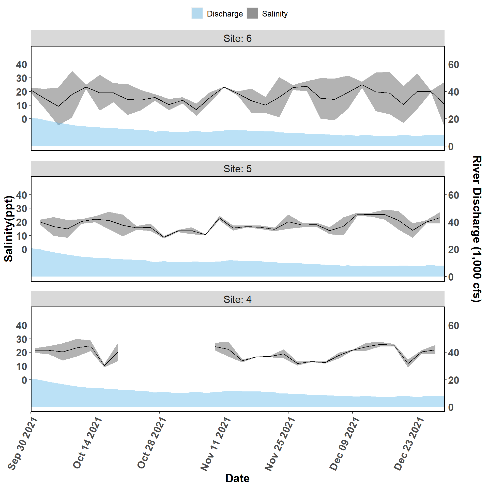
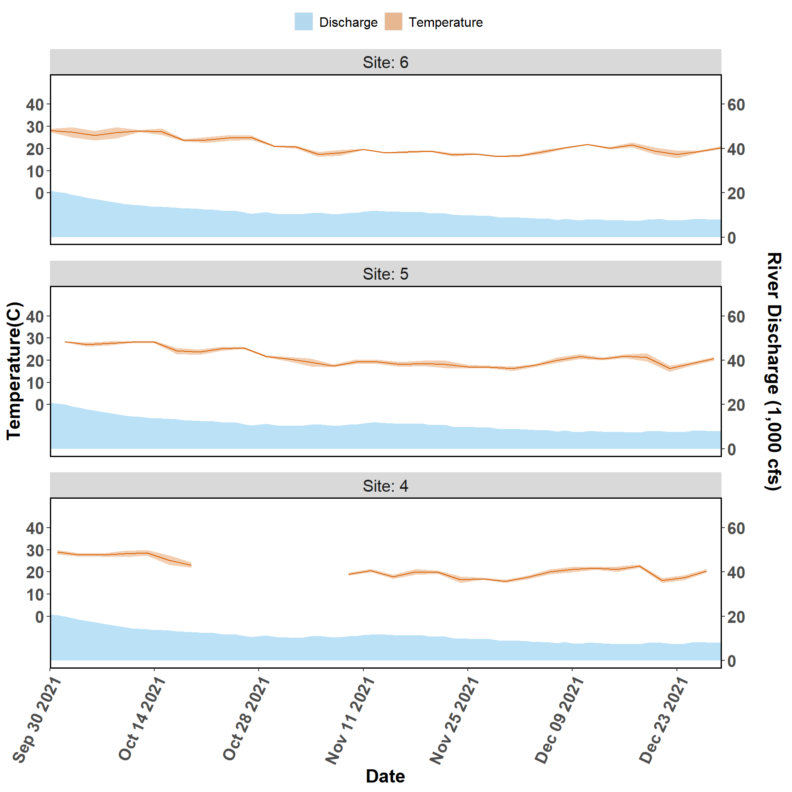
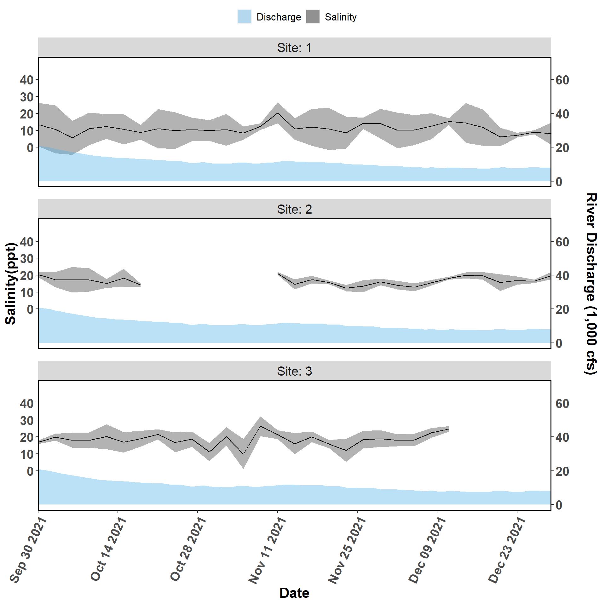
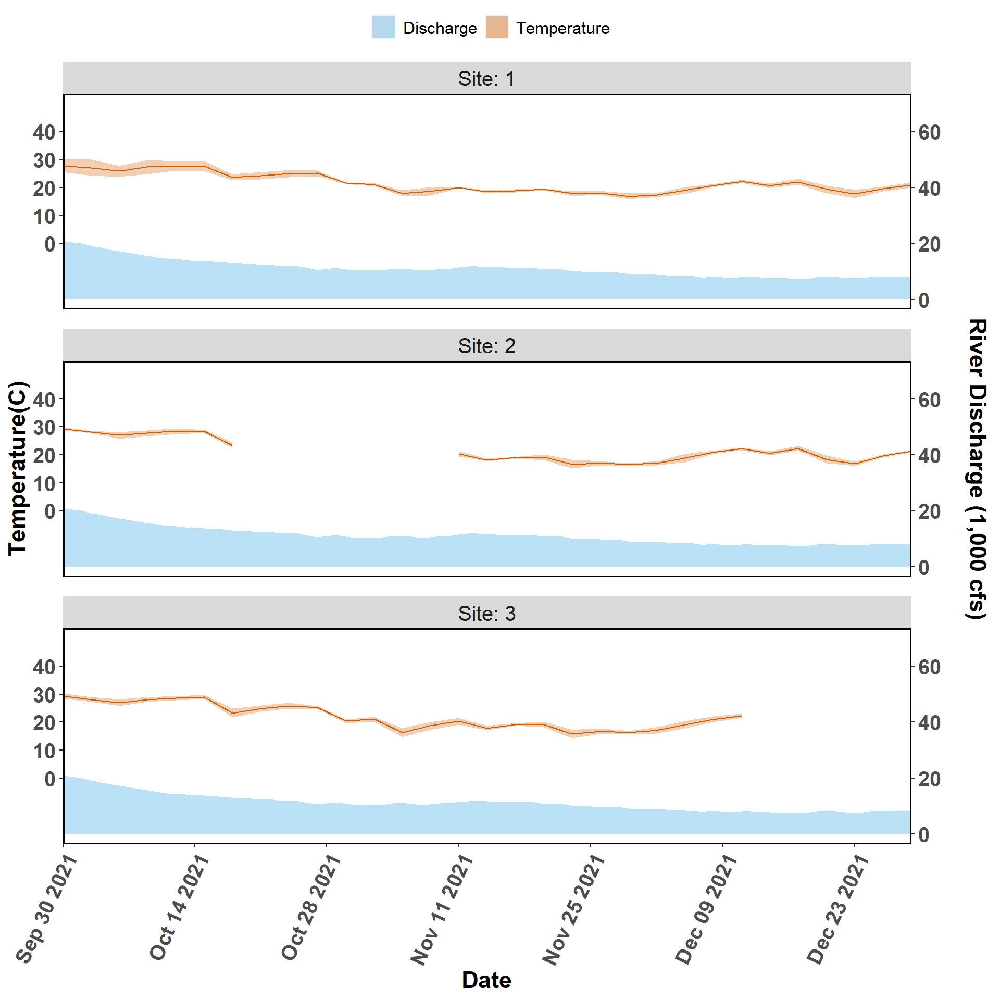

Chapter 2 Water Quality Quarterly Figures
Figure 2-1. Salinity and river discharge data collected from autonomous sensors from the Lone Cabbage Reef restoration site near Suwannee, FL. Each graph represents a sensor location, with top of page as north, and right of page as east. The center column of figures (Sites 1-3) represent the eastern side of the Lone Cabbage Reef restoration site. The left column of figures (Sites 4-6) represent the western side of the Lone Cabbage Reef restoration site. The right column of figures (Sites 7-9) represent sensors closest to shore in an area where salinity may be influenced by restoring Lone Cabbage Reef. The first two columns from the west (Sites 1-6) represent the inshore and offshore sides of the restoration reef. The primary y-axis is Salinity (ppt, parts per thousand), and the secondary y-axis is Suwannee River discharge (CFS, cubic feet per second) measured at USGS Wilcox station 02323500 on the Suwannee River. River discharge is graphed as a daily mean in the light blue filled shape near the bottom of each graph. Daily mean salinity values (black line) are depicted using a 95% confidence interval (grey shaded region). Missing river discharge values are due to corrupt readings or missing equipment.

Figure 2-2. Temperature and discharge data collected from autonomous sensors from the Lone Cabbage Reef restoration site near Suwannee, FL. Each graph represents a sensor location, with top of page as north, and right of page as east. The center column of figures (Sites 1-3) represent the eastern side of the Lone Cabbage Reef restoration site. The left column of figures (Sites 4-6) represent the western side of the Lone Cabbage Reef restoration site. The right column of figures (Sites 7-9) represent sensors close to shore in an area where salinity may be influenced by restoring Lone Cabbage Reef. The first two columns from the west (Sites 1-6) represent the inshore and offshore sides of the restoration reef. The primary y-axis is Temperature (C, Celsius), and the secondary y-axis is Suwannee River discharge (CFS, cubic feet per second) measured at USGS Wilcox station 02323500 on the Suwannee River. River discharge is graphed as a daily mean in the light blue filled shape near the bottom of each graph. Daily mean temperature values (orange line) are depicted with a 95% confidence interval (shaded orange region). Missing river discharge values are due to corrupt readings or missing equipment.
Figure 2-3. Salinity and discharge data collected from autonomous sensors from the Lone Cabbage Reef restoration site near Suwannee, FL. Each graph represents a sensor location, with top of page as north, and right of page as east. The figures (Sites 7-9) represent sensors close to shore in an area where salinity may be influenced by restoring Lone Cabbage Reef. The primary y-axis is Salinity (ppt, parts per thousand), and the secondary y-axis is Suwannee River discharge (CFS, cubic feet per second) measured at USGS Wilcox station 02323500 on the Suwannee River. River discharge is graphed as a daily mean in the light blue filled shape near the bottom of each graph. Daily mean salinity values (black line) are depicted using a 95% confidence interval (grey shaded region). Missing river discharge values are due to corrupt readings or missing equipment.
Figure 2-4. Temperature and discharge data collected from autonomous sensors from the Lone Cabbage Reef restoration site near Suwannee, FL. Each graph represents a sensor location, with top of page as north, and right of page as east. The figures (Sites 7-9) represent sensors close to shore in an area where salinity may be influenced by restoring Lone Cabbage Reef. The primary y-axis is Temperature (C, Celsius), and the secondary y-axis is Suwannee River discharge (CFS, cubic feet per second) measured at USGS Wilcox station 02323500 on the Suwannee River. River discharge is graphed as a daily mean in the light blue filled shape near the bottom of each graph. Daily mean temperature values (orange line) are depicted with a 95% confidence interval (shaded orange region). Missing river discharge values are due to corrupt readings or missing equipment.

Figure 2-5. Salinity and discharge data collected from autonomous sensors from the Lone Cabbage Reef restoration site near Suwannee, FL. Each graph represents a sensor location, with top of page as north, and right of page as east. The figures (Sites 4-6) represent the western side of the Lone Cabbage Reef restoration site. The primary y-axis is Salinity (ppt, parts per thousand), and the secondary y-axis is Suwannee River discharge (CFS, cubic feet per second) measured at USGS Wilcox station 02323500 on the Suwannee River. River discharge is graphed as a daily mean in the light blue filled shape near the bottom of each graph. Daily mean salinity values (black line) are depicted using a 95% confidence interval (grey shaded region). Missing river discharge values are due to corrupt readings or missing equipment.

Figure 2-6. Temperature and discharge data collected from autonomous sensors from the Lone Cabbage Reef restoration site near Suwannee, FL. Each graph represents a sensor location, with top of page as north, and right of page as east. The figures (Sites 4-6) represent the western side of the Lone Cabbage Reef restoration site. The primary y-axis is Temperature (C, Celsius), and the secondary y-axis is Suwannee River discharge (CFS, cubic feet per second) measured at USGS Wilcox station 02323500 on the Suwannee River. River discharge is graphed as a daily mean in the light blue filled shape near the bottom of each graph. Daily mean temperature values (orange line) are depicted with a 95% confidence interval (shaded orange region). Missing river discharge values are due to corrupt readings or missing equipment.

Figure 2-7. Salinity and discharge data collected from autonomous sensors from the Lone Cabbage Reef restoration site near Suwannee, FL. The figures (Sites 1-3) represent the eastern side of the Lone Cabbage Reef restoration site. The primary y-axis is Salinity (ppt, parts per thousand), and the secondary y-axis is Suwannee River discharge (CFS, cubic feet per second) measured at USGS Wilcox station 02323500 on the Suwannee River. River discharge is graphed as a daily mean in the light blue filled shape near the bottom of each graph. Daily mean salinity values (black line) are depicted using a 95% confidence interval (grey shaded region). Missing river discharge values are due to corrupt readings or missing equipment.

Figure 2-8. Temperature and discharge data collected from autonomous sensors from the Lone Cabbage Reef restoration site near Suwannee, FL. The figures (Sites 1-3) represent the eastern side of the Lone Cabbage Reef restoration site. The primary y-axis is Temperature (C, Celsius), and the secondary y-axis is Suwannee River discharge (CFS, cubic feet per second) measured at USGS Wilcox station 02323500 on the Suwannee River. River discharge is graphed as a daily mean in the light blue filled shape near the bottom of each graph. Daily mean temperature values (orange line) are depicted with a 95% confidence interval (shaded orange region).